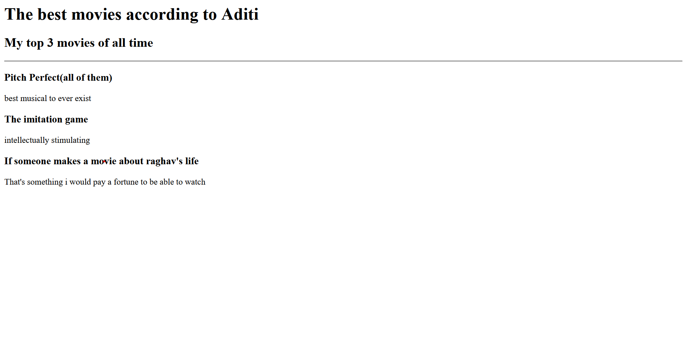
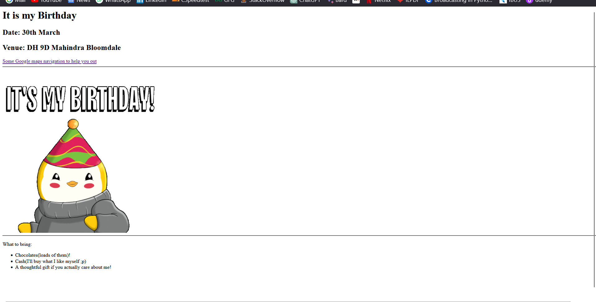

Aditi Chandorkar's HTML Portfolio
I am a web developer(lol or atleast trying to be one)
Movie Ranking Project
Click here to access my movie ranking project! :p
If you are feeling too lazy to click on it here's a screenshot of the same!

Birthday Invite Project
Click here to access my birthday invite project!
If you are feeling too lazy to click on it here's a screenshot of the same!

About Me
Contact me